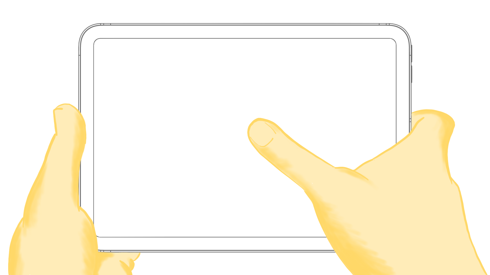
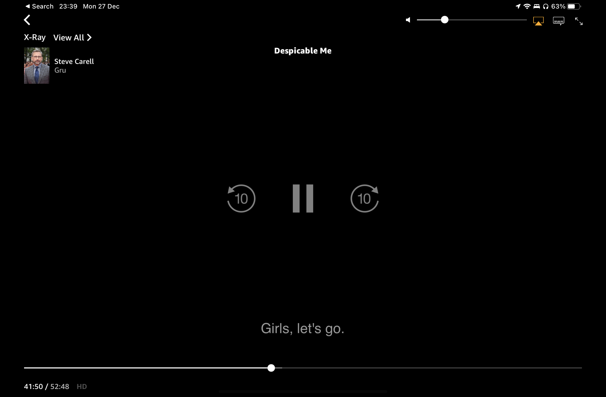
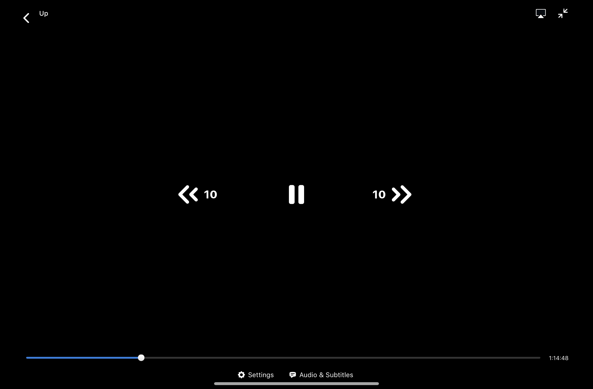
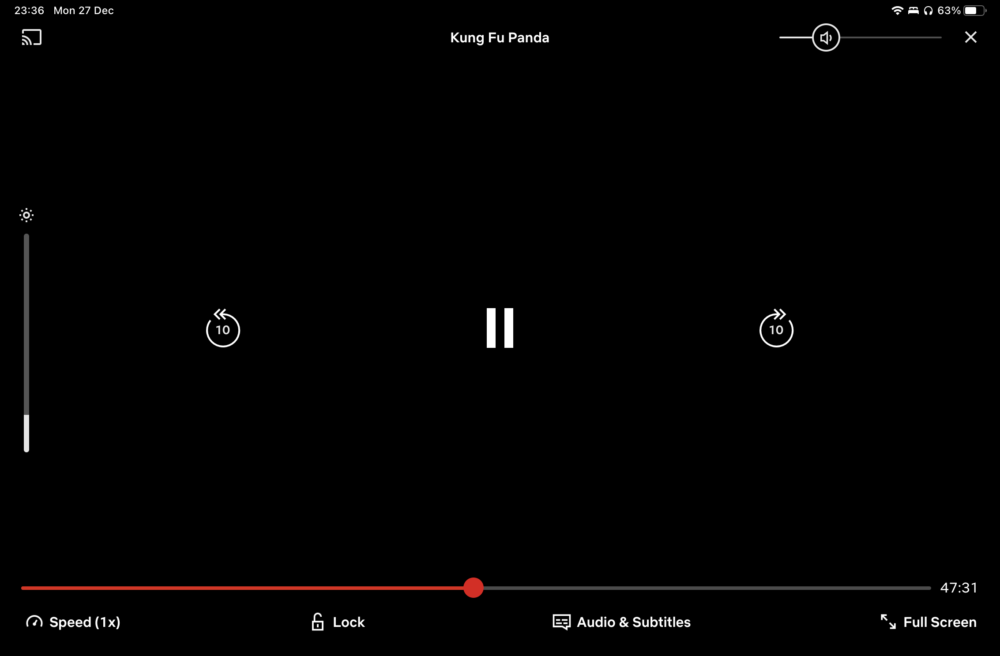
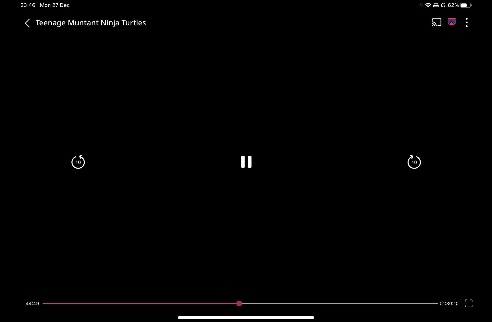
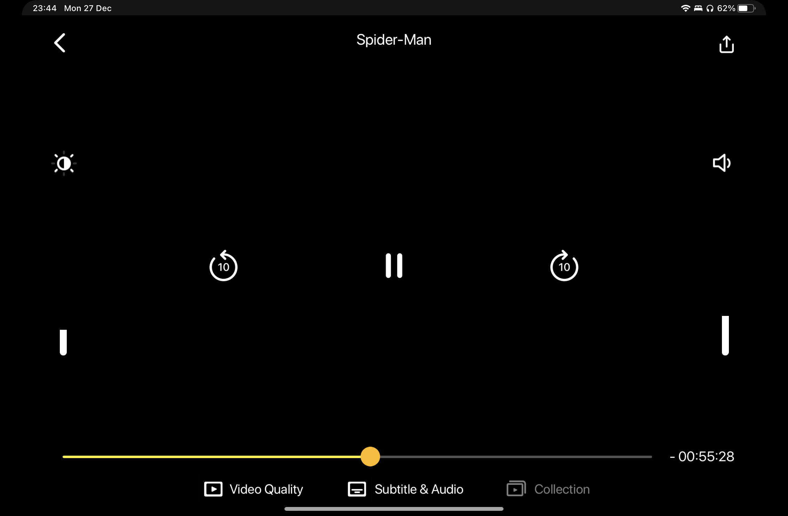
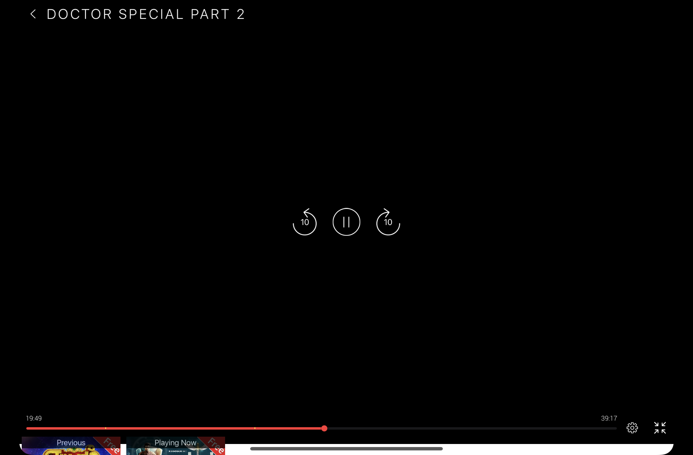
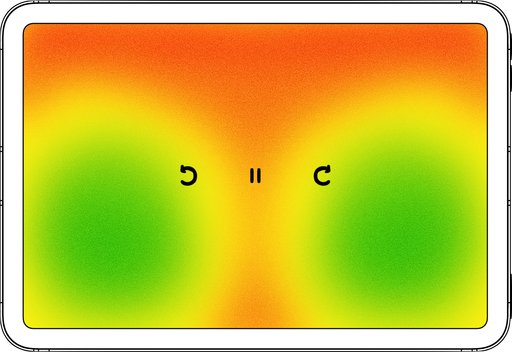
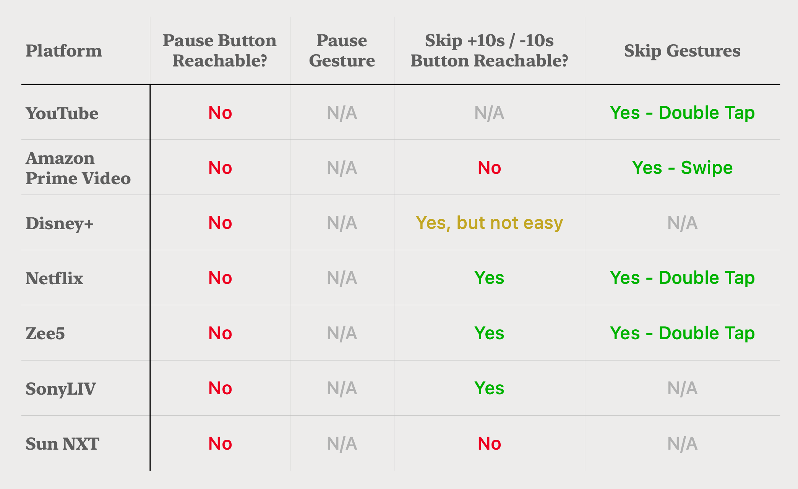

Pause and Play
Watching movies and videos is one of the most common use cases of an iPad, yet the media playback controls in most of the video streaming apps look non-iPad-like.

Background
I was watching a movie on the Amazon Prime Video iPad app. To pause it, I had to extend my thumb beyond its flexibility to reach the middle of the screen.
Overview
This project attempts to design a usable media control layout for large handheld devices like the iPad.
Field Study
I started studying the interfaces of popular media streaming services
- YouTube
- Amazon Prime Video
- Disney+
- Netflix
- Zee5
- SonyLIV
- Sun NXT
YouTube
Amazon Prime Video
Disney+ Hotstar
Netflix
Zee5
SonyLIV
Sun NXT
Almost all interfaces look the same. The skip ahead/backward buttons are pretty reachable, and the pause button is out of reach for the thumb.
Reachability
Reachability is a common issue in all of the apps. I created a reachability map of the two thumbs on an iPad in landscape orientation to further understand the problem.
I overlaid standard controls over the visualization to gauge the reachability of the buttons.
The position of the skip ahead/backward buttons is forgivable yet not ideal. But the pause button is located at the second-worst possible location (The first being the upper-middle).
Thumb reachability map
Reachability Study
Since the skip and pause buttons are the most used, I drew out a reachability analysis table to further study the apps.
From the study, none of the apps had a reachable pause button nor had a gesture as a workaround.
I did the study with an iPad mini — the smallest in the market. The usability of these interfaces grows worse as the size of the iPad increases.
User Research
I interviewed coworkers and friends to understand their usage patterns with the playback controls.
Most used controls?
- They all used the skip ahead/backward button more than the pause button.
- Volume and brightness were used once or not at all
When and why use the skip button?
- "I use it to skip through songs"
- "I use it to skip through boring scenes."
- "Sometimes I've to rewatch a scene”
When and why use the pause button?
- "I pause when someone calls my name”
- "To adjust my pillow support."
- "To look for easter eggs in a scene."
- "To read the subtitles.”
Gesture or button? Why?
- “Gesture. Whole screen works a tap target.”
- “Button. Gestures are triggered accidentally.”
- “Gesture. Intuitive and we need to look for the button.”
- “Gesture. I use the double tap gesture on YouTube all the time.”
Pain Points
From the user research and reachability analysis, I decided to limit the scope of the problem to the essential controls - skip and pause
- Unreachable pause button, sometimes skip buttons too
- Lack of a pause gesture
I sketched a couple of prototypes addressing these pain points.
Concept #1
I moved the skip controls closer to the edges. I also moved the pause button to the left beside the skip backward button. Having the pause button on the left leads to easier discoverability since our eye scans a screen from left to right. And also easily reachable with the left thumb.
Gestures
- New two-finger tap to pause
- Double tap to skip forward and backward
Concept #2
Inspired by game controls, a floating joystick with skip controls on its left and right and a pause in the bottom. This floating joystick can be accessed with a tap anywhere on the screen.
Gestures
- Gestures aren’t needed as the controls themselves act as gestures
Next Steps
The user research is not complete yet. More observations are needed on how they use other controls like brightness, volume, subtitles when watching a movie.
A study on why the streaming apps are not using the style from Apple's Human Interface Guidelines.
User testing and iterations on the concepts is yet to be done.
Back to Portfolio